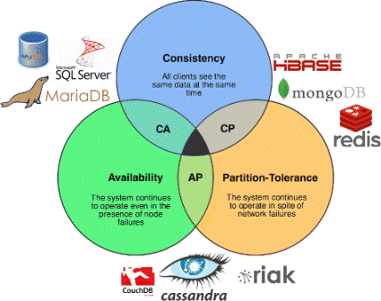

Úvod
1 Databázy NoSQL Analýza súčasného stavu
1.1 Teoretické vymezenie pojmu NoSQL databáza
1.2 Dátové modely NoSQL databáz
1.2.1 Model kľúč-hodnota
1.2.2 Model rodiny stĺpcov
1.2.3 Dokumentový model
1.2.4 Grafový model
1.3 Relačné databázy
1.4 Základné rozdiely Relačných a NoSQL databáz
1.5 MongoDB Funkcie Aggregate a Map_reduce pre štatistické výpočty
1.5.1 Funkcia Aggregate
1.5.2 Funkcia Map_reduce
2 Ciele bakalárskej práce
Úvod
Databázové technológie sa vyvíjajú viac ako 40 rokov. Súčasné informačné systémy využívajú obvykle na ukladanie dát relačné databázy. Veľký nárast objemu dát a ich rôznorodosť viedol k potrebe vzniku nových typov databázových systémov. Tieto nové typy databáz nazývame NoSQL. Termín NoSQL zastrešuje predovšetkým stĺpcovo orientované databázy, dokumentové databázy a databázy s kľúčom a hodnotou. Termín sa nepovažuje za pomenovanie konkrétneho produktu, ale za označenie nového databázového konceptu, nového trendu, ktorým sa viacero databázových systémov vydalo. nepopisuje presné technológie a riešenie. Bol zvolený pre voľne špecifikovanú triedu nerelačných databázových úložísk. Tieto typy databáz zväčša nepoužívajú ako dotazovací jazyk SQL. Sú využívané pri práci s veľkým množstvom dát. NoSQL databázy využívajú schopnosti ukladať a načítať veľké množstvo dát bez závislosti na vzťahoch a používajú iné prostriedky ako tabuľkové schémy u tradičných relačných databáz. Pre zabezpečenie optimálneho výkonu sú dáta rozdelené, systémy pracujú s dátami, ktoré sú uložené na niekoľkých serveroch redundantne. V súčasnej dobe sa využívajú hlavne v oblasti cloud computingu a v sociálnych sieťach. V úvodnej kapitole zdôrazníme definičné vymedzenia pojmov, ktoré súvisia s danou problematikou. Predstavíme NoSQL databázy cez prizmu historického vývoja a zameriame sa na základné vlastnosti NoSQL databáz, a tiež porovnanie medzi relačnými a nerelačnými databázovými systémami. Opíšeme NoSQL riešenia, ktoré v súčasnej dobe využívajú významné technologické spoločnosti na spravovania neštruktúrovaných dát. NoSQL databáz rovnako ako SQL databáz, je veľké množstvo. V praktickej časti bakalárskej práce budeme využívať jedného zástupcu tohto typu databáz, a to konkrétne MongoDB. Dáta uložené v databáze bude využívať nami vytvorená webová aplikácia. V závere praktickej časti bakalárskej práce otestujeme rýchlosť spracovania záznamov funkciami Aggregate a Map_reduce.
1. Databázy NoSQL Analýza súčasného stavu
Pojem databáza v dnešnej dobe pozná skoro každý. Už minulosti mali ľudia potrebu zhromažďovať dáta, zväčša išlo o evidenciu obyvateľov, zoznam kníh alebo klientov obchodov, bánk. V súčasnosti počty týchto záznamov presahujú stovky miliónov. S rapídnym nárastom dát sa paralelne stretávame s javom, kedy začínajú byť dáta neštruktúrované. Toto má za následok, že tradičná správa dát pomocou relačných schém a referencií prestáva byť použiteľná. To viedlo k vzniku špecializovaných typov databázových systémov
1.1 Teoretické vymezenie pojmu NoSQL databáza
Samotný termín NoSQL sa vyznačuje svojou komplikovanou povahou, nakoľko neexistuje jeho presná definícia a taktiež nemá ani všeobecne ustálený význam (McCreary, 2013). Termín NoSQL sa prvýkrát použil v roku 1998 v prípade relačnej databázy, kde nebol využívaný jazyk SQL. V roku 2009 došlo k opätovnému oživeniu termínu, vzhľadom k tomu, že sa začal uvádzať na rôznych konferenciách obhajcov nerelačných databáz. Za znovuzrodením termín stál Eric Evans, ktorý ho použil na konferencii v San Franciscu (Litho, Mattsson, 2010).
NoSQL je súbor konceptov, ktoré umožňujú rýchle a efektívne spracovanie dát so zameraním na výkon, spoľahlivosť a agilnosť (McCreary, Kelly, 2013). Z toho dôvodu skratku NoSQL vysvetľujeme skôr ako Not-only-SQL, nie ako No-SQL (Strauch, 2011) aj keď spočiatku sa NoSQL chápalo skutočne ako No-SQL (teda striktné vyhranenie sa voči SQL).
NoSQL nie je názvom konkrétneho produktu, ale označuje nový databázový koncept, nový trend, ktorým sa mnoho databázových systémov vydalo. Samotné NoSQL databázové systémy nevylučujú využívanie jazyka SQL. Prínos NoSQL databáz spočíva v tom, že vnášajú nové myšlienkové pochody a riešenia do databázových systémov.
Známe sú aj také databázy, ktoré spĺňajú už uvedené a napriek tomu sa nezaradzujú medzi NoSQL databázy. Najvýznamnejšou ideou pri takýchto databázach je predovšetkým vyriešenie problémov týkajúcich sa aplikácií, ktoré sú novšieho a modernejšieho charakteru, a ktoré disponujú väčšími schopnosťami ako tradičné a staršie databázové systémy (Klobása, 2012).
Kellyho definícia nevylučuje ani klasické relačné či SQL databázové systémy. Preto autori pokračujú výpočtom vlastností, ktoré NoSQL databázy spájajú. Tými hlavnými sú rozdielne formáty uloženia dát, nepoužívajú iba uloženie riadkov v tabuľkách, väčšina z nich nepodporuje JOIN, umožňujú ukladať dáta bez nutnosti definovať schému, fungujú na mnohých procesoroch, sú ľahko horizontálne škálovateľné, využívajú architektúru shared-nothing, môžu fungovať na mnohých lacných uzloch, bežné počítače prepojené do veľkého výkonného celku a v neposlednom rade sú inovatívne (McCreary; Kelly, 2013).
V súčasnom svete existujú desiatky rôznych NoSQL databázových systémov, medzi najpoužívanejšie patrí napríklad MongoDB, Redis a Memcached, ElasticSearch, alebo Apache Cassandra. Naším reprezentantom NoSQL databáz bude práve MongoDB, ktoré poslúži ako stavebný pilier pre riešenie navrhnuté v tejto práci.
Základné vlastnosti, ktoré sú totožné pre väčšinu databáz NoSQL:
• nevyužívajú relačný model (záznamy neobmedzuje presná štruktúra),
• sú dostupné open-source,
• boli navrhnuté tak, aby vyhovovali podmienkam pre prácu v klastri,
• sú horizontálne škálovateľné.
Okrem toho mnohé ponúkajú nekomplikovanú replikáciu, nenáročné programovacie rozhranie a sú schopné spracovať i väčšie objemy dát (Fowler, 2012). História pojmu NoSQL databáza nesiaha ďaleko. Ako názov hovorí, pojem NoSQL vznikol až po vytvorení štandardizovaného jazyka SQL. Prvá spoločnosť, ktorá musela riešiť problém s veľkým objemom štruktúrovaných dát, bola Google. Medzi dátami, ktoré spoločnosť potrebovala ukladať, prevažovali obsahy stránok, prepojenie medzi stránkami a textové odkazy (Kopal, 2015). Spoločnosť Google sa rozhodla vyriešiť tento vzniknutý problém za pomoci projektu pod názvom BigTable. Ten odštartoval väčší rozmach databáz s neskorším pomenovaním NoSQL databázy. Vo väčšine prípadov je základom týchto databáz princíp kľúč-hodnota. BigTable spôsobil výrazný zvrat v rámci databázového sveta, keďže sa nejedná o databázu, ktorá by bola riadkovo zameraná, ako je tomu v prípade tradičných databáz. Využíva sa databáza stĺpcovo orientovaná (Kopal, 2015). K podobnej situácii došlo aj v prípade spoločnosti Amazon. Najväčší internetový predajca sa inšpiroval týmto projektom a rovnako našiel riešenie v ukladaní dát za použitia princípu kľúč-hodnota. Riešenie už konkrétneho charakteru sa využilo v distribuovanej databáze, ktorá vystupuje pod názvom Dynamo. V nej sú ukladané dáta o predaných produktoch. Obidva spomínané projekty, BigTable a Dynamo, sú inšpirujúce pre vytvorenie a vývoj mnohých ďalších NoSQL databáz.
Časovo najstaršia je databáza Oracle Berkeley DB, ktorá sa na rozdiel od väčšiny NoSQL databáz neinšpirovala projektom BigTable.
ej vznik sa odhaduje na dobu pred 16 rokmi, pričom sa jej škála vlastností postupne rozširovala.
Dnes sa delí do troch jedinečných verzií: Berkeley DB, Berkeley DB JavaEdition, Berkeley DB XML. Bola vytvorená na univerzite v Berkeley.
Uvedenú črtu NoSQL databázy týkajúcu sa používania rozličných dotazovacích jazykov alebo rozhraní (nielen SQL) možno nájsť aj u Oracle Berkeley DB, ktorá
poskytuje možnosť ukladať a čítať dáta za pomoci:
• SQL syntaxe,
• XQuery,
• Java objektov,
• párov kľúč/hodnota.
Na základe svojich vlastností možno NoSQL využiť predovšetkým pre zálohovanie a ukladanie logovacích záznamov. Jeho využitie je adekvátne aj v tých prípadoch, kde sa požaduje realizácia vkladania a dopytovania v skutočnom čase, ak je konzistencia dát menšou prioritou. Mnoho NoSQL databáz sa využíva v takých podmienkach, kde sa vyžaduje škálovateľnosť. Ako príklad môžeme uviesť sociálnu sieť Foursquare, pracujúcu s NoSQL databázou MongoDB, slúžiacou na ukladanie dát o zaujímavých lokalitách (dáta relatívne statického charakteru), ale aj o aktivitách používateľov (Pramod, 2013). NoSQL disponuje výraznými medzerami napríklad v takých situáciách, kde je nevyhnutná transakčnosť, napríklad banky a v situáciách, kde je oveľa jednoduchšie využiť statické analytické prostriedky s tým, že sa použije SQL.
MongoDB sa považuje za open-source databázové riešenie, ktoré sa zaraďuje do skupiny NoSQL. Za výhodu MongoDB sa považuje to, že návrh je jednoduchý a škálovanie horizontálne (MongoDB, 2015). Za hlavnú entitu v MongoDB sa považuje dokument, ktorý je možné prezentovať ako slovníkovú štruktúru dát na princípe kľúč–hodnota. Hodnotou môže byť iný slovník, pole, či niekoľko hlavných typov ako je číselná hodnota, eventuálne reťazec znakov. Dokumenty sú zhrnuté do jednotlivých kolekcií. Je nevyhnutné podotknúť, že kolekcie nedisponujú predpísanou schémou. Inak povedané, dokumenty v jednej kolekcii môžu disponovať rôznymi štruktúrami. Viacero kolekcií spolu vytvára databázu. Dokument sa považuje za analógiu k riadku v SQL databáze, kolekcia je tabuľkou v SQL databáze. Dotazovacieho jazyka implementovaný v MongoDB napomáha k vyhľadávaniu podľa hodnoty kľúča, rozsahu hodnôt, či za pomoci regulárnych výrazov a vlastných JavaScript funkcií.
1.2 Dátové modely NoSQL databáz
Rok 2009 možno považovať za obdobie vzniku NoSQL databáz. V súčasnom období je ich zhruba 1500 typov. Tieto databázy sú charakteristické len krátkodobým vývojom, a z toho dôvodu nepretržite dochádza ku chybám, ktorých odstraňovanie skvalitňuje funkcionalitu. K samotnému popisu databázy sa využíva dátový logický model. V NoSQL databázach sa aj napriek tejto skutočnosti uprednostňuje odlišný prístup, v ktorom sa nepoužívajú predpísané normy, na základe ktorých sa následne používajú rozličné terminológie. Vytráca sa rozdiel medzi konceptuálnym a databázovým pohľadom na dáta. Skupina NoSQL databáz sa dá rozčleniť na základe dátového modelu, avšak napriek tomu sú medzi jednotlivými databázami obrovské rozdiely (Abadi, 2010). NoSQL databázy sa neriadia striktne ACID garanciami (atomicity, consistency, isolation, durability), ale uprednostňujú poskytovanie vysokého výkonu. Pre NoSQL databázy sa zaviedol BASE model, ktorý je zameraný na flexibilitu (tabuľka 1).
| ACID | BASE |
| Silná konzistencia | Slabá konzistencia |
| Izolovanosť | Dostupnosť na prvom mieste |
| Zameranie na „commit“ | Zameranie na „Best effort“ |
| Vnorené transakcie | Približné odpovede |
| Dostupnosť | Agresívnosť |
| Konzervatívna | Jednoduchšia |
| Náročné zmeny | Jednoduchší vývoj |
Uviedli sme, že tento model BASE je nerelačný a ďalej je možné rozdeliť na modely:
• kľúč hodnota,
• model dokumentový,
• model rodiny stĺpcov,
• model grafový.
V roku 2000 na sympóziu o distribuovaných systémoch (Towards Robust Distributed Systems), vyslovil Eric Brewer CAP teorém (consistency, avaliability, patriotion tolerance), ktorý je dnes uznávaný širokou NoSQL komunitou a ovplyvnil aj dizajn nerelačných databáz. CAP teorém tvrdí, že databáza môže splniť iba dve požiadavky z troch (obrázok 1).
C – Konzistencia (Consistency) – všetci používatelia databáz vidia rovnaké dáta, aj v prípade protichodných aktualizácií.
A – Dostupnosť (Availability) – vždy je možné získať nejakú verziu dát. Znamená to, že každá požiadavka je obslúžená, úspešne alebo neúspešne.
P – Tolerancia (Partition tolerance) – databáza je schopná fungovať dobre aj v prípade, že niektorá časť systému vypadne.

1.2.1 Model kľúč-hodnota
Na tento model je možné nahliadať ako na tabuľku v RDBMS, ktorá má dva stĺpce, a to kľúč a hodnota. Akýkoľvek blok dát bez nutnosti analyzovať obsah na strane databázy sa označuje ako Hodnota. Za analyzovanie obsahu zodpovedá aplikačná vrstva. Za obsah sa považuje jednoduchá hodnota, text, JSON, XML alebo iná štruktúra. NoSQL databázy toho najjednoduchšieho charakteru využívajú práve tento model. Používateľ má možnosť vkladať, vyberať či mazať hodnotu pre daný kľúč (Sadalage, 2011). Databázy s týmto modelom pristupujú k dátam iba pomocou kľúča. Ak je potrebné dotazovať na základe určitého atribútu, ktorý nie je uložený v poli kľúč, ale v poli hodnota, je nevyhnutné vybrať iný model NoSQL databázy. V prípade, ak sú databázy podporované sekundárnymi indexmi, je možné dotazovať uložené dáta aj prostredníctvom indexového atribútu. Za veľkú výhodu databáz sa považuje vysoká škálovateľnosť a kvalitný výkon z dôvodu jednoduchosti modelu.
Za najznámejšie databázy v rámci tohto modelu sa považuje:
• Berkeley DB,
• Redis,
• Memcached,
• Amazon DynamoDB Project Voldemort,
• Riak,
• Aerospike.
Model kľúč-hodnota je adekvátny predovšetkým pre uloženie informácií o reláciách, používajúci jednoduchú operáciu put. Dáta sú uložené v skupinách v jednom zázname pod kľúčom. Môže sa jednať o identifikátor používateľa a taktiež jeho relácie. Následne je možné k nim veľmi rýchlo pristúpiť prostredníctvom operácie get (Abadi, 2010).
1.2.2 Model rodiny stĺpcov
V takomto modeli sú dáta ukladané ako viacrozmerné mapy. Záznam je zložený z kľúča namapovaného na hodnoty. Tie sú zhromaždené do rozličných rodín stĺpcov a každá jedna rodina stĺpcov pozostáva z mapy dát. V mnohých zdrojoch je označenie takýchto databáz zamieňané so stĺpcovo zameranými. Takéto označenie však nie je správne. Stĺpcovo zamerané databázy sú relačné, ktoré ukladajú dáta po stĺpcoch. K opačnej situácii dochádza v prípade riadkovo orientovaných RDBMS databáz. K najrelevantnejším predstaviteľom databáz, model rodina stĺpcov, možno zaradiť databázu Cassandra. Tá zabezpečuje ukladanie dát ako riadky, ktoré majú niekoľko stĺpcov a sú zoskupené s kľúčom riadka (Cockcroft, 2010). Riadok nedisponuje žiadnou pevnou schémou, preto môže mať rozličné stĺpce. Databázová bunka sa chápe ako celý obsah stĺpca. Jednotlivý kľúč riadku obsahuje nielen hodnotu, ale tiež časové pole s dátovým typom timestamp, ktoré napomáha odhaľovať možné konflikty pri aktualizácii, zápise a podobne.
Databáza Cassandra umožňuje vytvárať super stĺpce. Tie sú mapami ostatných dvojíc kľúč-hodnota. Uvedená databáza tvorí v oblasti záznamu mapu viacdimenzionálneho charakteru (Sadalage, 2011). Prevažná časť databáz modelu rodiny stĺpcov a považuje za klony vyššie spomínanej databázy BigTable od spoločnosti Google. Takéto databázy poskytujú lineárnu škálovateľnosť. Dôkazom je benchmark s databázou Cassandra, v ktorej počet uzlov v klastri narástol z 50 na 300, čím narástla priepustnosť zápisu o šesťkrát (Sadalage, 2011). Ako príklad použitia môžeme uviesť internetové dátové prenosy za určité obdobie. Ostatné systémy a databázy napomáhajú aj pri spracovaní veličín kvalitatívneho charakteru. Ak to povoľuje situácia, omnoho efektívnejšia a rýchlejšia je práca s transformovanými radami pre numerické vyjadrenie, ktoré bezpodmienečným spôsobom podporujú všetky systémy.
V týchto databázach sa využívajú udalosti, a z toho dôvodu je potrebné vymedziť, čo je udalosť. Za udalosť sa považuje jav v databáze, či v systéme. Ide o niečo, čo sa uskutočnilo, eventuálne by sa malo uskutočniť v rámci danej oblasti.
Pojem udalosť sa využíva aj v oblasti programovej entity. Tá predstavuje výskyt udalostí v rámci výpočtového systému. K udalosti môže dôjsť aj vo sfére počítačovej technológie. Ako príklad môžeme uviesť situáciu keď sa prekročí určitá hranica pri zaplňovaní disku, poškodí sa zariadenie, zamietne sa prístup do operačného systému a podobne. Udalosti sú komplexnejšie ako merania. Merania sú vo väčšine prípadov zaznamenané prostredníctvom jednoduchších dátových typov, avšak udalosti sú objektmi. Platba zákazníkov síce môže byť jednoduché meranie hodnoty, avšak na druhej strane aj udalosť – objekt, ktorý obsahuje vymedzenie platiteľa, jeho identifikovanie, nakúpené položky, platobný spôsob a podobne (Sadalage, 2011).
1.2.3 Dokumentový model
Databázy, ktoré majú dokumentový model, sú zložené zo základných prvkov označovaných ako dokumenty. Za dokument sa môže považovať XML, BSON, JSON a podobne. Dokumentový model sa v podstate chápe ako rozšírený model kľúč hodnota, avšak s tým rozdielom, že hodnota sa ukladá do dokumentu. V prípade ukladania dokumentu je dôležité, aby sa dodržiaval formát dokumentu, ktorý je podporovaný databázou. V rámci každej databázy je formát dokumentu odlišný. Ku záznamom je možné pristupovať prostredníctvom kľúča, alebo obsahu daného dokumentu (Cockcroft, 2010). Databázy s týmto modelom sú príznačné tým, že majú bohatší dotazovací jazyk na rozdiel od databázy typu kľúč – hodnota, kde je dotazovanie jednoduchého charakteru. Uložené dokumenty nie je potrebné vopred definovať. Každý dokument sa chápe ako jednoduchý a intuitívny spôsob prezentovať zložité dátové štruktúry a prevažná časť z nich sa dá veľmi dobre mapovať z objektovo orientovaných jazykov. K najznámejším dokumentovým databázam možno zaradiť MongoDB, OrientDb, CouchDB, RavenDB, Terrastore.
1.2.4 Grafový model
Grafový model sa v najväčšej miere odlišuje od predchádzajúcich modelov, v ktorých sa záznamy usilovali nemať žiadny vzťah. V databázach s grafovým modelom sú záznamy vo veľkom počte vzťahov. Tento model sa usiluje prezentovať dátové štruktúry ako grafy. Vo väčšine prípadov sa jedná o ohodnotené, či orientované grafy. Záznamy sa označujú ako uzly, ak sú uvedené na samotnom grafe. Vzťahy medzi záznamami sa označujú ako hrany. Tie sú orientované a sú doplnené o vzťahové atribúty (Sadalage, 2011). Pozitívom týchto databáz je, že disponujú možnosťou vyriešiť klasické grafové problémy.
Databáza pod označením Neo4j má v sebe včlenené algoritmy grafového charakteru pre vyhľadávanie najkratšej cesty medzi vybranými uzlami. Taktiež je možné vyhľadať všetky cesty, či použiť Dijkstrov algoritmus. V súčasnosti už jestvuje obrovský počet grafových databáz. K databázam, ktoré sa najviac používajú, možno zaradiť databázu FlockDB, Neo4j, OrientDB, Graph, či Infinite.
1.3 Relačné databázy
V tejto časti práce definičným spôsobom vymedzíme relačné databázy. Uvedieme ich základné vlastnosti, ACID, Sharding a taktiež historický vývoj. Aby sme mohli plne pochopiť rozdiely NoSQL a jeho výhody, či na druhej strane nevýhody, je dôležité najskôr v stručnosti uviesť základné vlastnosti a problémy, s ktorými sa stretávajú tradičné relačné databázy. V súčasnom období sú relačné databázové systémy chápané ako dominantná technológia, a to na trhoch webových aj biznisových aplikácií. Za oporu takýchto databázových systémov sa považujú pravidlá relačnej algebry a dotazovanie na dáta s využitím jazyka SQL.
Relačný databázový model funguje na princípe združovania dát do takzvaných relácií, obsahujúcich n-tice (riadky). Tieto relácie tvoria základ relačnej databázy. Má pevnú definovanú štruktúru (stĺpce tabuľky a ich dátové typy). Kolekcia tabuliek, ich vzájomných vzťahov, indexov a ďalších súčastí tvorí relačnú databázu. Uvedený spôsob ukladania dát sa označuje ako riadkový (Návrat, 2009). Jeden riadok tabuľky je jeden záznam v databáze (osobu, adresu, produkt a podobne). Riadok je zložený z niekoľkých polí (atribúty - stĺpce), ktoré majú pevne daný dátový typ. Za nevyhnutný prvok tohto spôsobu ukladania dát sa považuje nedeliteľnosť riadku. V prípade operácií SELECT, UPDATE, či DELETE, sa s riadkom nakladá ako s jednou nedeliteľnou entitou.
Tabuľka a definície stĺpcov sa vytvárajú pred prvým uložením dát do tabuľky. Samotný tabuľkový opis je uložený v takzvaných metadátach. Aby sa zlepšil výkon, sú často krát nad jednotlivými stĺpcami vytvárané indexy. Tie umožňujú zrýchliť proces vyhľadávania záznamov, a to vytváraním zoznamov hodnôt a odkazov na ne.
Za základné príkazy pre manipulovanie s dátami sa považuje:
• SELECT- výber,
• INSERT - vloženie,
• UPDATE - zmena,
• DELETE - zmazanie.
V každom riadku je uvedený jednoznačný identifikátor (primárny kľúč) používaný pre prístup k danému riadku. Aby sa mohli vytvoriť vzťahy medzi dátami, používajú sa cudzie kľúče. V prípade spojenia dát z niekoľkých tabuliek sa využíva operácia JOIN. Tá na základe vymedzených vzťahov prepojí dáta do jedného logického celku. Za ďalšiu dôležitú vlastnosť relačných databáz sa považujú transakcie. Tie sú v RDBMS nedeliteľným súhrnom operácií, ktoré sa realizujú všetky spolu, alebo žiadna z nich. Typickým prípadom je prevod peňazí v banke. V prvom kroku sa peniaze odpočítajú z účtu A a v druhom kroku sa pripočítajú na účet B. Nie je prípustné, aby v prípade chyby došlo k odpočítaniu peňazí z účtu A, ale nedošlo k ich pripočítaniu na účet B. V prípade chyby sa všetky zmeny vrátia (takzvaný ROLLBACK) a nedôjde tak ani k odpočítaniu z účtu A.
Vlastnosti transakcií v RDBMS sú označované ako ACID. Atomicita bola predstavená v predchádzajúcom príklade s prevodom peňazí. Celá transakcia je nedeliteľná a buď sa vykoná celá, alebo vôbec neprebehne. Konzistencia znamená, že po vykonaní transakcie musí byť databáza v konzistentnom stave. Ak prevedieme 2 000 € z účtu A na účet B, celková zmena peňazí je nulová (-2 000 z A +2 000 na B). Nesmie dôjsť k tomu, že sa zmení celkové množstvo peňazí. To by sa mohlo stať pri chybe v transakcii (odpočítajú sa peniaze, ale nedôjde k ich pripočítaniu - stratí sa 2000 Eur) alebo v prípade súbežného behu viacerých transakcií. S tým súvisí tretia vlastnosť transakcií, a to izolovanosť. Každá transakcia je odčlenená od ostatných, nesmie ostatné ovplyvniť. Ak je transakcia vrátená, nesmie ovplyvniť iné transakcie. Ak k tomu dôjde, musí dôjsť k vráteniu všetkých ovplyvnených transakcií (kaskádový ROLLBACK).
Posledná vlastnosť je trvalosť. Akonáhle transakcia prebehne, výsledky musia byť trvalé. Pokiaľ dôjde k prevodu peňazí na účet B, má jeho majiteľ právo s nimi nakladať a napríklad ich minúť. Ak v noci dôjde k pádu bankového systému a je obnovený zo zálohy, nie je prípustné, aby došlo k obnoveniu do stavu pred prevodom peňazí.
1.4 Základné rozdiely Relačných a NoSQL databáz
Relačné databázy disponujú dominantným postavením. Dôvodom dominancie sú poskytované vlastnosti, ktoré sú najlepšou kombináciou jednoduchosti, robustnosti, flexibility,
výkonu, škálovateľnosti a kompatibility v prípade správy dát. V súčasnom období čoraz viac aplikácií je spustených v prostrediach, kde sa vyžaduje obrovské pracovné
vyťaženie a vyžaduje sa škálovateľnosť (scalability).
Relačné databázy sa škálujú, ale zväčša len vtedy, ak dôjde k zmene mierky na jednom serverovom uzle. Ak sa dosiahne kapacita tohto jediného uzla, je nevyhnutné, aby sa
zmenila mierka a zaťaženie, dôjde k prenosu na viacero uzlov servera. V prípade škálovania väčšieho počtu uzlov atraktivita RDBMS pre väčšie distribuované systémy
drastickým spôsobom klesá. Toto je značným obmedzením pri cloud riešeniach. Prirodzené obmedzenia v relačnej databáze zabezpečia, že dáta na najnižšej úrovni majú integritu.
Dáta, ktoré porušujú integritné obmedzenia, nemôžu byť fyzicky zapísané do databázy. Takéto obmedzenia neexistujú v kľúč-hodnota databázach, takže zodpovednosť za
zabezpečenie integrity dát je plne ponechaná na aplikáciách. Chyby v riadne navrhnutej relačnej databáze zvyčajne nevedú k problémom integrity dát, ale chyby v
kľúč-hodnota databáze, však celkom ľahko môžu viesť k problémom integrity dát. Jedným z ďalších kľúčových výhod relačnej databázy je, že je nutné aplikovať
proces modelovania dát. Proces modelovania vytvorí v databáze logickú štruktúru, ktorá odráža dáta, ktoré má obsahovať. Dáta, sú aplikačne nezávislé, čo znamená, že
ostatné aplikácie môžu používať rovnaký dátový súbor a aplikačná logika môže byť zmenená bez narušenia základného dátového modelu (Cogswell, 2012).
V nasledujúcich tabuľkách poskytujeme porovnanie rozdielov medzi relačnými a nerelačnými databázami s popisom ich základných charakteristík. Porovnáme základné
vlastnosti relačných a nerelačných databázových systémov (tabuľka 2) a uvádzame aj rozdiely z hľadiska prístupu k dátam (tabuľka 3).
| Relačné databázy | Kľúč/Hodnota (Key/Value) databázy |
| Databáza pozostáva z tabuliek, ktoré obsahujú stĺpce a riadky. Riadky tabuľky musia mať tú istú schému. Riadky sú tvorené stĺpcami hodnôt. Riadky v tabuľke majú rovnakú schému. | Domény môžu byť najprv myslené ako tabuľky, ale na rozdiel od relačných tabuliek nie je definovaná schéma pre doménu. Doména je sektor, do ktorého sú jednotlivé prvky vložené. Prvky v rámci jednej domény môžu mať rôzne schémy. |
| Dátový model je definovaný vopred. Schéma je pevne daná a obsahuje obmedzenia a vzťahy, ktoré si vynútila dátová integrita. | Prvky sú identifikovateľné kľúče, a vzhľadom k prvku môžu mať dynamickú sadu atribútov, ktoré sú k nemu pripojené. |
| Dátový model je založený na reprezentácii dát, ktoré obsahuje, a nie na aplikačnej funkcionalite. | V niektorých implementáciách, všetky atribúty sú typu reťazec. V iných implementáciách, atribúty majú typy, ako pole reťazec a zoznam. |
| Dátový model je normalizovaný, aby boli odstránené duplicity dát. | V niektorých implementáciách, všetky atribúty sú typu reťazec. V iných implementáciách, atribúty majú typy, ako pole reťazec a zoznam. |
| Relačné databázy | Kľúč/Hodnota (Key/Value) databázy |
| Dáta sú vytvárané, editované, mazané a získavané použitím SQL. | Dáta sú vytvárané, editované, mazané a získavané pomocou volania API metód. |
| SQL dotazy môžu pristupovať k dátam jednej tabuľke, alebo k viacerým tabuľkám cez spojenie tabuliek (joins). | Niektoré implementácie poskytujú základné SQL ako syntax pre definovanie kritérií filtra. |
| SQL obsahuje funkcie pre agregáciu a filtrovanie. | Základné filtrovanie podporuje =, !=, < , >, <=, >= a často môžu byť len aplikované. |
| Obsahujú prostriedky pre logické spracovanie dát, ako sú triggers, uložené procedúry a funkcie. | Dátová integritná logika je obsiahnutá v aplikačnom kóde. |
Na rozdiel od relačných databáz, kľúč-hodnota databázy majú málo spoločných štandardov. Zdieľajú podobné koncepty, ale každý z nich má svoje vlastné API, špeciálne dotazovacie rozhranie, a iné osobitosti (tabuľka 4).
| Relačné databázy | Kľúč/Hodnota (Key/Value) databázy |
| Majú vlastné špecifické API, alebo využívajú všeobecné API, ako OLE-DB alebo ODBC. | Majú tendenciu poskytovať SOAP (Simple Object Access Protokol) a REST APIs cez ktoré možno dátové volania dosiahnuť. |
| Dáta sú uložené vo formáte, ktorý reprezentuje ich prirodzenú štruktúru, takže musí byť mapovaná medzi aplikačnou štruktúrou a relačnou štruktúrou | Dáta môžu byť účinnejšie uložené v kóde aplikácie, ktorá je kompatibilná s jeho štruktúrou. |
Relačné databázy majú vlastné špecifické API, ale používajú všeobecné API (OLE-DB, či ODBC). V NoSQL databázach je tendencia poskytovať SOAP[9] a REST APIs. Cez ich použitie je možné dosiahnuť dátové volania. V relačných databázach sú dáta ukladané vo formáte, ktorý prezentuje ich prirodzenú štruktúru. Musí sa mapovať medzi aplikačnou a relačnou databázou. V prípade NoSQL sa dáta môžu efektívnejšie ukladať v aplikačnom kóde (Bain, 2009). Ako sme vyššie uviedli, SQL databázy pracujú s ACID transakciami, ktoré uzamykajú časť dát, pokým sa neukončí transakcia. Týmto spôsobom sa zamedzí prístup k dátam a ostatné požiadavky musia počkať na dokončenie prvej transakcie. Avšak problém sa vyskytuje v tých databázach, kde je potrebné ukladanie dát a nie je dovolená žiadna latencia. Ako príklad môžeme uviesť spoločnosť Amazon, ktorá zistila, že v prípade zhoršenia odozvy o 100 ms sa jej zníži objem predaja o 1 % (Chicken, 2009).
Spoločnosť Google uvádza, že zhoršenie odozvy o pol sekundy zníži návštevnosť webovej stránky o 20% (Chicken, 2009). Práve preto v NoSQL databázach sa využíva prístup BASE. V prípade BASE prístupu je databáza dostupná aj v prípade čiastočných porúch v komunikácii medzi uzlami, alebo sú dostupné minimálne jej časti. Týmto spôsobom dochádza k dočasnej nekonzistencii dát. Nastáva oneskorenie v synchronizácii zmien medzi jednotlivými časťami databázy, avšak v prípade, ak sa obnoví spojenie a databáza je nevyťažená určitý čas, všetky transakcie sa vykonajú a konzistentnosť databázy sa obnoví.
1.5 MongoDB Funkcie Aggregate a Map_reduce pre štatistické výpočty
Databáza MongoDb podporuje niekoľko spôsobov implementácie agregačných operácií. Jednoduchšie operácie je možné vykonávať pomocou príkazov count(), distinct() a group(). S postupným vývojom databázy MongoDB sa rozširovali aj možnosti použitia ďalších operácií. Bol doplnený tzv. agregačný framework Aggregation Pipeline s príkazom aggregate() a koncept MapReduce.
1.5.1 Funkcia Aggregate
MongoDB agregačný framework je postavený na princípe pipelines, spracovanie dát. Pipeline (rúra) vytvára prúd dokumentov, ktorý transformuje dokumenty do súhrnného výsledku (obrázok 2). Bol navrhnutý tak, aby bol výpočet agregácií jednoduchý, a zároveň výkonný. Na výpočet prostredníctvom agregačného framweroku slúži funkcia aggregate(), s parametrom pipeline. Nevýhodou je, že nepodporuje uloženie výstupu agregácie naspäť do kolekcie, preto je potrebné uložiť ho manuálne.

Obrázok 2: Schéma funkcie Aggregate
1.5.2 Funkcia Map_reduce
Map reduce je koncepčný rámec, ktorý bol zavedený spoločnosťou Google, umožňuje spracovanie veľkých dátových súborov pomocou veľkého počtu uzlov.
Hlavnou myšlienkou je, že väčší problém je rozdelený na sadu menších podproblémov, ktoré môžu byť vyriešené individuálnym uzlom (obrázok 3). Následne sa jednotlivé riešenia znova spoja a vytvoria konečnú odpoveď na väčší problém. Jednotlivé Map a Reduce kroky môžu byť počítané nezávisle na sebe, takže môžu byť paralelne vykonávateľné v rámci klastra na viacerých pracovných uzloch.
Pri použití tejto funkcie musia vývojári zadefinovať iba dve funkcie:
• map() - zabezpečuje vstup, rozdeľuje problém na menšie podproblémy, a distribuuje ich do pracovných uzlov. Pracovný uzol to môže vykonávať opakovane, čo vedie k multi-úrovňovej stromovej štruktúre. Svoje odpovede odovzdá do svojho hlavného uzla.
• reduce() - hlavný uzol, zhromažďuje odpovede na čiastkové úlohy, ktoré kombinuje a vytvorí odpoveď, ako riešenie problému, ktorý sa snaží riešiť.

Obrázok 3: Schéma funkcie MapReduce
2 Ciele bakalárskej práce
Cieľom bakalárskej práce je navrhnúť webovú aplikácie na báze NoSQL. V teoretickej časti analyzovať súčasný stav a poukázať na možnosti využitia, ktoré ponúkajú NoSQL produkty. Zároveň ozrejmiť hlavné rozdiely medzi relačnými databázami a NoSQL databázami.
Čiastkové ciele:
• popísať a analyzovať hlavné rozdiely medzi relačnými databázami a NoSQL databázami,
• uviesť dôvody, a tiež hlavné klady a zápory použitia NoSQL databáz,
• charakterizovať jednotlivých zástupcov NoSQL s dôrazom na nami v praktickej časti použitú databázu,
• navrhnúť, vytvoriť a v praxi overiť funkčnosť webovej aplikácie, ktorá bude spracovávať dáta uložené v NoSQL,
• dáta pre databázu generovať ako záznamy špecifické pre prístup používateľov na webovú stránku,
• získané záznamy pretransformovať do formy požadovanej majiteľom webových stránok, t.j. grafov a tabuliek reprezentujúcich informácie o počte prístupov na webovú stránku, navštevovaných webových stránok a lokalizácii používateľov,
• porovnať rýchlosť spracovania rovnakého počtu záznamov funkciami Aggregate a Map_reduce.